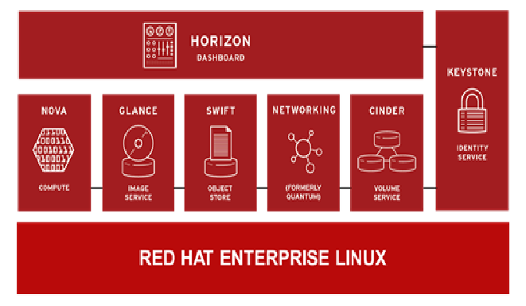

OpenStack
OpenStack是目前規模最大且增長最快的開放原始碼雲端基礎架構平台，可為組織或企業提供大型可擴充服務，建構標準x86 硬體和虛擬化系統管理程式，自動化私有基礎即服務(laaS)的雲端架構。它可協助企業部署預置型的雲端基礎架構，此基礎架構與外部雲端服務提供者，如：Amazon的運行架構類似。
Red Hat OpenStack是基於開源社群上發展的OpenStack建構而成，其兼具了開源社群上的創新基礎與Red Hat對於商業版本提供的支援與穩定性，使用產業通用的API與開放標準來實現以下功能：
- 整合現有的應用程式與工作負載
- 技術不受限於單一供應商
- 跨供應商技術相容
- 支援混合部署模式，確保在私有雲或公有雲中的高度可擴充性
OpenStack採用模組化設計概念，目的在保持架構上的最大靈活性與可擴充性，並滿足各種應用與用戶需求，架構上是基於多個基本子項目組成的統一架構平台，包括：
- Nova：計算模組，可實現電腦資料庫的自動化和管理
- Glance：圖像管理模組，可提供虛擬機器的映射和範本搜索、註冊和檢索服務
- Swift：分散式高可用性物件儲存模組，用於靜態資料的儲存，可擴充到Petabyte
- Quantum：設計為插拔式後端系統的虛擬聯網控制器，具有多種聯網技術以及強大的可擴充性和靈活性
- Cinder：性能敏感型資料的區塊式儲存管理器，可管理區塊儲存的建立、連接及分離
- Horizon：基於Web的高擴充性圓形儀表板，提供使用者和管理員進行雲端資源問答和管理的介面
- Keystone：身份管理認證服務，可與標準目錄服務連接、管理多個帳戶、建立信任關係並保護所有OpenStack交易的安全
當企業考量OpenStack部署所帶來的各種好處時，必須考慮到如此大規模的社群專案會持續不斷演變、發展。而作為一個基於Linux的laaS平台，OpenStack必然涉及組織中資料中心的多個核心領域。因此擁有一個企業級的支援平台是建構OpenStack時必須的考量的重要因素，只有這樣才能確保組織部署雲端平台的穩定和優化，進而滿足組織中獨特的業務需求。此外，目前OpenStack社群版本的發佈週期為6個月，這樣的生命週期是否可以奠定業務的穩定基礎，是企業要考慮的。成功的OpenStack部署不但要求合作的廠商必須具備完全的開放技術環境，還要能提出完整的架構、執行方案設計及專業的顧問來為您的IT 團隊提供支援。該廠商必須能夠在OpenStack上建立獨特的自訂代碼，並向組織的IT部門員工提供適當的技術培訓和教育訓練。
Red Hat OpenStack不僅可實現OpenStack社群項目的創新，同時還能為在Red Hat Enterprise Linux上創建的平台提供安全性、穩定性和企業級應用的完整性。憑藉在開放原始碼社群長期且可靠的經營與合作經驗，Red Hat具有得天獨厚的優勢，再透過Red Hat簡便的訂閱模式讓企業能以最大的成本效益取得可靠的解決方案。
Red Hat OpenStack讓企業組織從傳統工作負載轉移到雲端支援的工作負載，以維持企業現有基礎架構投資為出發點，逐步協助企業轉向成為開放雲端的技術環境，有別於其他廠商的OpenStack 發行版本，Red Hat OpenStack可提供硬體、軟體和服務的認證生態系統，充分滿足企業於基礎架構的需求，實現延長OpenStack社群生命週期的軟體生命週期。Red Hat可為您的機構提供所需的安全性、可靠性和靈活性，以便組織充分利用OpenStack的快速發展，卻又不必承擔產品環境的穩定性和可支援性風險。
